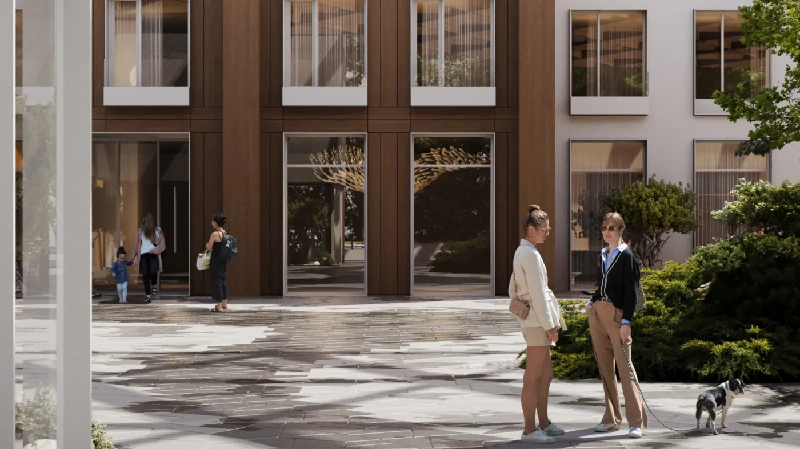
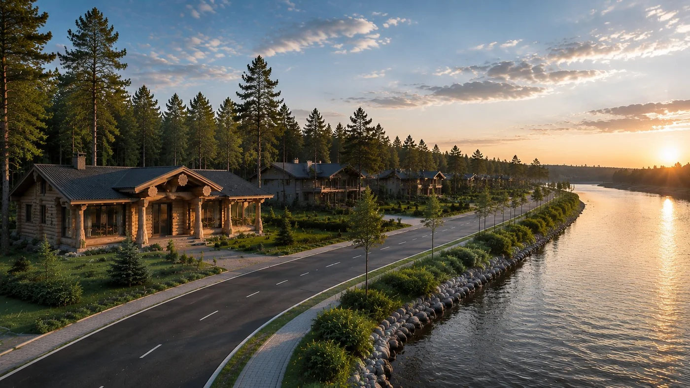
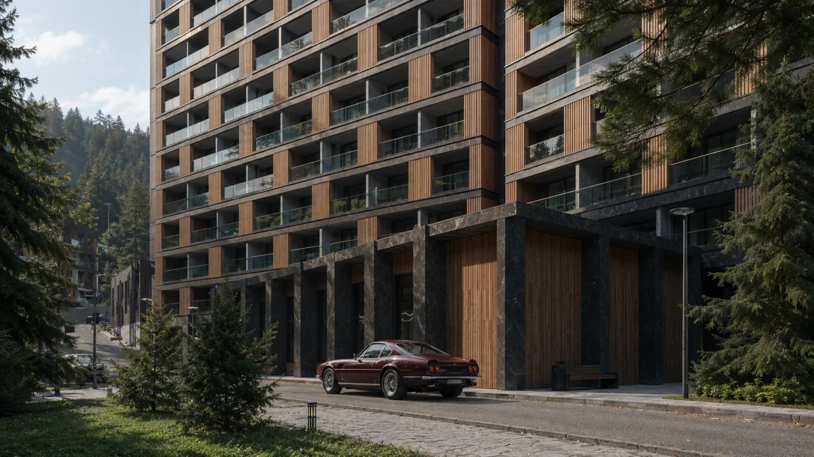
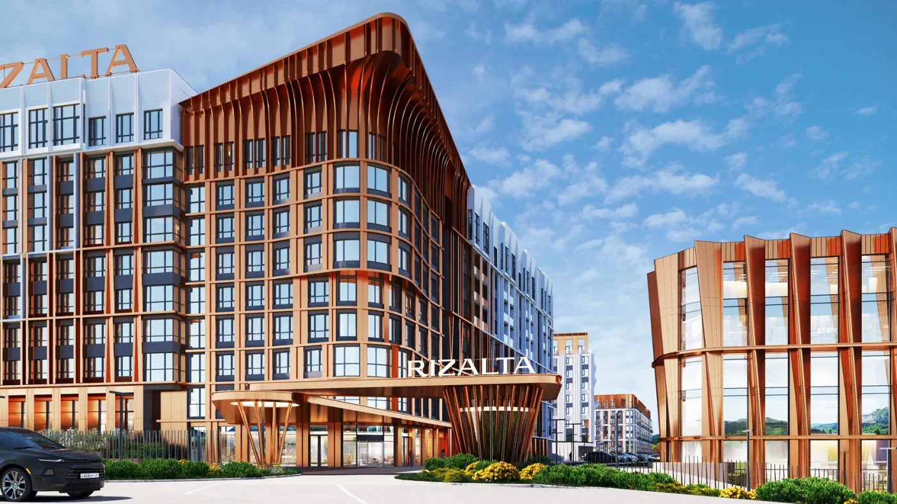

ДИЗАЙН БЛОКА «ПОХОЖИЕ ПРОЕКТЫ»
Алтай.
Продолжение истории.
Четыре композиции в стиле алтайских лендингов BARNES. Светлый камень, лесные оттенки, бордовый акцент и настоящие фотографии проектов.
Пример подборки для «Кедров» · 8 других проектов
Спокойная сетка: архитектура и природа в равновесии.
ДРУГИЕ ПРОЕКТЫ BARNES НА АЛТАЕ
Найдите свой
ритм Алтая.
У воды, среди гор или в тишине сада.
Продолжите знакомство с проектами
курортной коллекции BARNES.
Глубокий зелёный фон и широкие фотографии. Близко к настроению «Кедров».
БОЛЬШЕ МЕСТ ДЛЯ ВАШЕЙ ИСТОРИИ
Другие грани
Алтая.
Резиденция-парк
Белогорье
Смотреть проектАпартаменты
Бирюзовая Катунь
Смотреть проектРезиденции у Катуни
Грушевый цвет
Смотреть проектПриватные шале
ЗаГорье
Смотреть проект
Апарт-комплекс
Карлуу
Смотреть проект
Коттеджный посёлок
Медвежий угол
Смотреть проект
Апартаменты у Катуни
Рэдиент Алтай
Смотреть проект
Белокуриха · Апартаменты
Rizalta Resort
Смотреть проект
Все восемь проектов видны сразу. Фотография, название и формат.
ОТКРОЙТЕ ДЛЯ СЕБЯ ДРУГОЙ АЛТАЙ
Ещё восемь
точек притяжения.
Разная архитектура.
Разные сценарии отдыха.
Одна коллекция BARNES.
Резиденция-парк
Белогорье
Апартаменты
Бирюзовая Катунь
Резиденции у Катуни
Грушевый цвет
Приватные шале
ЗаГорье
Апарт-комплекс
Карлуу
Коттеджный посёлок
Медвежий угол
Апартаменты у Катуни
Рэдиент Алтай
Белокуриха · Апартаменты
Rizalta Resort
КУРОРТНАЯ НЕДВИЖИМОСТЬ · АЛТАЙСКИЙ КРАЙ И РЕСПУБЛИКА АЛТАЙ
Один выразительный кадр рядом с компактным списком остальных проектов.
ПРОДОЛЖИТЕ ЗНАКОМСТВО
Ваш следующий
адрес на Алтае.
Выберите место,
к которому хочется возвращаться.